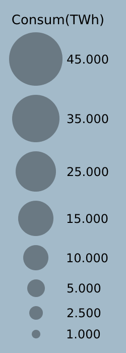

La creixent demanda
Explorem la sempre creixent demana d'energia.
La demanda de energia creix inexorablement a causa tant del creixement de la població mundial com del creixement del consum mitjà d'energia per càpita. El progrés tecnològic i econòmic estan estretament relacionats amb el consum d'energia. Tant es així que en les dues ultimes decades el consum energetic s'ha duplicat.
Amb el següent gràfic es mostra l'evolució del consum energetic per països tot relaciónant-lo amb l'augment i enriquiment de la població. Podem apretar el boto de play i veurem com les boles no paren de creixer!!
La demanda de energia creix inexorablement a causa tant del creixement de la població mundial com del creixement del consum mitjà d'energia per càpita. El progrés tecnològic i econòmic estan estretament relacionats amb el consum d'energia. Tant es així que en les dues ultimes decades el consum energetic s'ha duplicat.
Amb el següent gràfic es mostra l'evolució del consum energetic per països tot relaciónant-lo amb l'augment i enriquiment de la població. Podem apretar el boto de play i veurem com les boles no paren de creixer!!
|
|
 |
Cobrint el planeta
Una mirada global a la distribució de les centrals elèctriques.
Donada aquesta demana creixent d'energia de la població, cada vegada es necesiten més plantes de producció electrica. No totes les plantes de producció són iguals, hi ha diferents tipus de fonts d'energia que s'utilitzen per generar energia elèctrica. La majoria de les centrals elèctriques utilitzen combustibles fòssils com el carbó, el petroli o el gas natural per generar electricitat. També hi ha altres fonts, com l'energia nuclear, l'energia hidràulica, etc.
Si mirem el mapa rapidament veiem quin com estan distriuides les centrals el mapa, hi ha més verd? blau? vermell? podem fer zoom amb la tecla control i la rodeta del ratoli pers explorar-lo tranquilament.
Donada aquesta demana creixent d'energia de la població, cada vegada es necesiten més plantes de producció electrica. No totes les plantes de producció són iguals, hi ha diferents tipus de fonts d'energia que s'utilitzen per generar energia elèctrica. La majoria de les centrals elèctriques utilitzen combustibles fòssils com el carbó, el petroli o el gas natural per generar electricitat. També hi ha altres fonts, com l'energia nuclear, l'energia hidràulica, etc.
Si mirem el mapa rapidament veiem quin com estan distriuides les centrals el mapa, hi ha més verd? blau? vermell? podem fer zoom amb la tecla control i la rodeta del ratoli pers explorar-lo tranquilament.
La marca del CO2
Visualitzem el cost de producció energetic en relació al co2
Les concentracions de diòxid de carboni estan augmentant sobretot a causa dels combustibles fòssils que cremem per obtenir energia. Els combustibles fòssils com el carbó i el petroli contenen carboni que les plantes van treure de l'atmosfera mitjançant la fotosíntesi durant molts milions d'anys; estem retornant aquest carboni a l'atmosfera en només uns quants centenars. Des de mitjans del segle XX, les emissions anuals de la combustió de combustibles fòssils han augmentat cada dècada. I com ja sabem, el co2 es el principal causant del calentament global.
Mirant la gràfica següent podem veure quins combustibles han contribuit més a la acumulació del Co2 les ultimes decades.
Les concentracions de diòxid de carboni estan augmentant sobretot a causa dels combustibles fòssils que cremem per obtenir energia. Els combustibles fòssils com el carbó i el petroli contenen carboni que les plantes van treure de l'atmosfera mitjançant la fotosíntesi durant molts milions d'anys; estem retornant aquest carboni a l'atmosfera en només uns quants centenars. Des de mitjans del segle XX, les emissions anuals de la combustió de combustibles fòssils han augmentat cada dècada. I com ja sabem, el co2 es el principal causant del calentament global.
Mirant la gràfica següent podem veure quins combustibles han contribuit més a la acumulació del Co2 les ultimes decades.
L'alçament de les renovables
Mostrem la força de la "nova" tendecia del ús de les renovables
Per sort no totes les fonts d’energia produeixen co2, en les ultimes dècades s’ha fet un esforç per utilitzar cada vegada més energies renovables. L'energia renovable és l'energia derivada de fonts naturals inesgotables. La llum del sol i el vent, per exemple, són fonts que es reomplen constantment. La generació d'energia renovable genera molt menys emissions que la crema de combustibles fòssils. La transició dels combustibles fòssils, que actualment representen la part del lleó de les emissions, a les energies renovables és clau per fer front a la crisi climàtica.
Amb el següent gràfic veiem com cada vegada més s’usen aquest tipus de energies.
Per sort no totes les fonts d’energia produeixen co2, en les ultimes dècades s’ha fet un esforç per utilitzar cada vegada més energies renovables. L'energia renovable és l'energia derivada de fonts naturals inesgotables. La llum del sol i el vent, per exemple, són fonts que es reomplen constantment. La generació d'energia renovable genera molt menys emissions que la crema de combustibles fòssils. La transició dels combustibles fòssils, que actualment representen la part del lleó de les emissions, a les energies renovables és clau per fer front a la crisi climàtica.
Amb el següent gràfic veiem com cada vegada més s’usen aquest tipus de energies.
Mirant el futur
Intentem posar la mirada en el futur amb la projecció dels possibles escenaris.
De cara el futur hi ha molts escenaris possibles. Per explorar aquest escenaris s’utilitzen tècniques de predicció. Així s’utilitzen dades històriques per extreure informació valuosa que es pot utilitzar tant per a previsions a curt com a llarg termini. La previsió del consum d'energia és una tècnica que utilitzen els governs i les empreses per determinar les seves polítiques i estratègies relacionades amb el consum d'energia per als propers anys.
En el següent gràfic es mostres les previsions fetes per una de les companyes energètiques més important del mon. I ens mostra tres possibles escenaris. Afortunadament en tots ells la producció de energia renovable segueix en augment i el consum de combustibles fòssils decreix.
De cara el futur hi ha molts escenaris possibles. Per explorar aquest escenaris s’utilitzen tècniques de predicció. Així s’utilitzen dades històriques per extreure informació valuosa que es pot utilitzar tant per a previsions a curt com a llarg termini. La previsió del consum d'energia és una tècnica que utilitzen els governs i les empreses per determinar les seves polítiques i estratègies relacionades amb el consum d'energia per als propers anys.
En el següent gràfic es mostres les previsions fetes per una de les companyes energètiques més important del mon. I ens mostra tres possibles escenaris. Afortunadament en tots ells la producció de energia renovable segueix en augment i el consum de combustibles fòssils decreix.